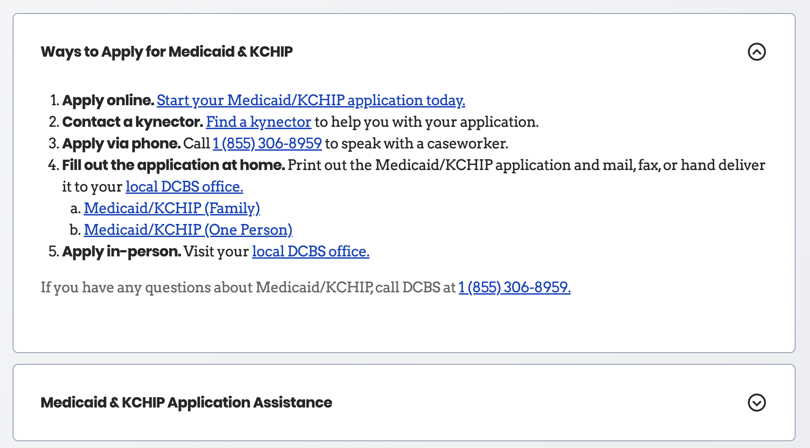

Example 2
Accordions
Accordions are some versatile molecules created using Text Elements and icons buttons in collapsed state and various other atoms like links and buttons in the expanded state. These are used when information is needed to be presented in a condensed form and revealed as needed.